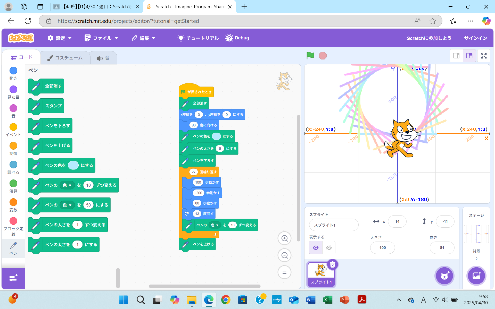
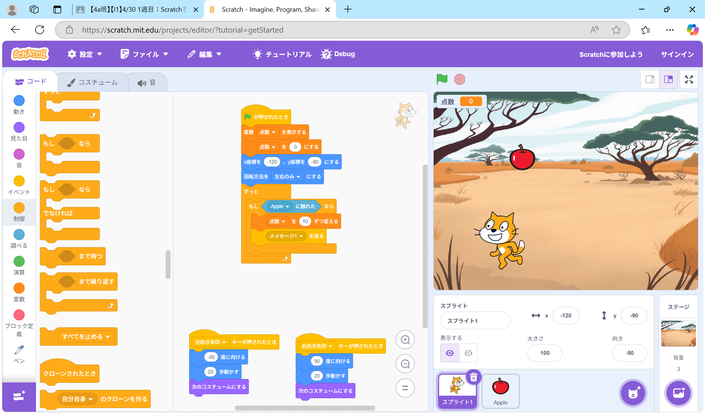

1週目のレポート ： 公大高専１年実習I-1
4a班21番 Maki1225
第1週目
1-1 サイエンスアート

1.内容
Scratchを使ってネコのスプライトをいろんな方向に動かすプログラムを作成しました。そして、そのネコの動きにあ わせてペンで線を引き、円のような図形を描きました。角度や歩数、ペンの色を変えていろんな形の図形を描きました。
2.感想
中学校でScratchを使用したことはありましたが、今回の実験実習のように、線で図形を描くプログラムを作ったこと はなかったので、挑戦することができてよかったです。次はもっと複雑な図形をScratchで描いてみたいと思いました。
1-2 ゲーム

1.内容
Scratchを使って「ネコを移動させて、落ちてくるりんごを掴む」というゲームを作成しました。完成したあとは、りん ごが落ちてくる場所をランダムにしたり、落ちてくる速さを変えたりすることができるようにプログラムを作りました。
2.感想
サイエンスアートのプログラムを作ったときよりプログラムが複雑で難しかったけど、初めてScratchでゲームを作るこ とができたので、うれしかったです。また作ることがあったら、オリジナルのゲームを作ることができたらいいなと思いました。
1-3 ホームページ作成
私のホームページ
1.内容
Chromeを起動してGithubのアカウントを作り、作ったアカウントでログインしました。そして、Githubを用いてHomePage を作り、編集しました。自分の趣味・嗜好や特徴・特技について書きました。
2.感想
はじめてホームページを作ったのですが、想像していたよりも細かい作業が多くて難しかったです。ですが、完成させる ことができたのでよかったです。こういう作業に慣れていけたらいいなと思いました。
各ページへのリンク
1週目のレポート
2週目のレポート
3週目のレポート
私のホームページ